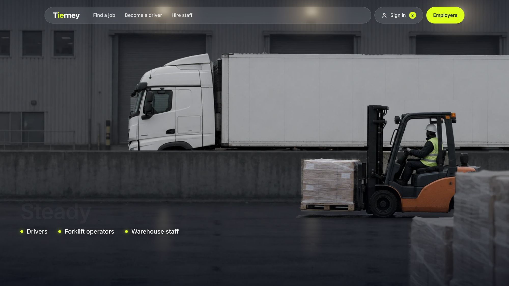

GarveyLennon
A law firm site that starts with the client’s story instead of the firm’s credentials, and ends with the name of the solicitor who will handle it.
- Sector
- Solicitors, Dublin 2
- Role
- Design and build
- Built with
- Astro, TypeScript, Claude Code
From a story to a person
People hire a solicitor, not a firm. I put the names of the people who handle each area of law in the very first menu, so a client knows who they will talk to before they call.
Someone with a family matter chooses the person before the price. I gave every solicitor a row with the law they handle and the languages they speak, with their photo appearing as you reach them, so the choice feels personal from the first screen.
The question people are most embarrassed to ask a solicitor on the phone is what the first meeting costs. I answered it on every area page, along with what happens at that meeting and who handles it.
Some of Dublin’s clients find it hard to explain a legal problem in English. So I put the languages each solicitor speaks next to their name and translated the whole flow into Polish and Portuguese. The firm reaches clients its competitors can’t, at the very first step.
Type and colour
On the phone


Every screen on this page is a recording of the live site.
Visit the live site